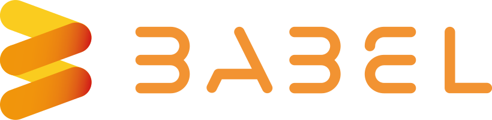

Experiencia Laboral

Programador Jr - Meraki Software Technologies
Agosto 2024 - Actual
- Desarrollo de módulos backend en Java usando Spring Boot.
- Implementación de bases de datos relacionales (MySQL).
- Colaboración en el diseño de APIs RESTful.
- Uso de herramientas como Git y Jira.
Desarrollador de Proyectos de Software - Colombian TI Software
Agosto 2022 - Febrero 2023
- Desarrollo de aplicaciones web en Python con Django y Flask.
- Programación orientada a objetos y manejo de bases de datos SQL.
- Proyectos en Java con arquitectura MVC, JPA, Servlets y JSP.
- Maquetación inicial de proyectos con Spring Boot.
Asesor de Soporte en Línea - X-tendo BPO
Enero 2021 - Febrero 2024
- Brindar asistencia personalizada a clientes sobre pagos en línea.
- Gestión de solicitudes de reembolso, devoluciones y cancelaciones.
- Mejora de métricas de servicio mediante sesiones de coaching.